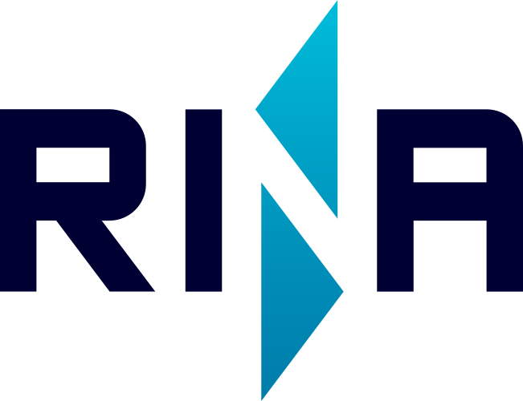
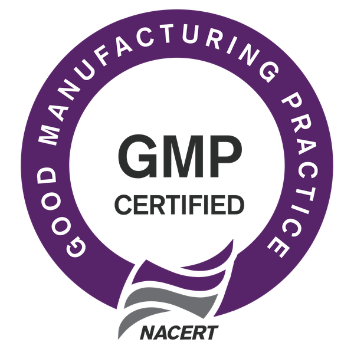

Angka tarikan per tahun masih perkiraan. Ganti dengan angka dari laporan internal perusahaan sebelum dipublikasikan.
Tentang Kami
PT Prima Armada Samudra adalah perusahaan pelayaran nasional yang bergerak di bidang angkutan laut dalam negeri menggunakan kapal tunda dan tongkang. Perusahaan berdiri pada 30 Maret 2004 dan berkantor pusat di Jakarta Pusat.
Saat ini kami mengoperasikan dan mengelola 80 set kapal tunda dan tongkang. Seluruh armada berbendera Indonesia dan diklaskan pada RINA atau ClassNK, dijalankan oleh kru bersertifikat sesuai jabatannya.
Kami mengambil alih sisi logistik laut dari usaha pelanggan, sehingga mereka dapat fokus pada kegiatan inti. Komunikasi yang terbuka dengan pelanggan kami jaga agar kerja sama berjalan saling menguntungkan dalam jangka panjang.
Kami percaya orang adalah aset utama. Karena itu pelatihan kru dijalankan berkala dan lingkungan kerja yang aman kami jaga, agar standar pelayaran kami tetap mutakhir.

Visi & Misi
Menjadi perusahaan pelayaran tug & barge nasional yang terpercaya dalam ketepatan waktu, keselamatan pelayaran, dan keandalan armada.
Legalitas
Dengan menjaga standar keselamatan dan lingkungan yang tinggi, kami berusaha memenuhi harapan pelanggan. Kami berkomitmen menciptakan lingkungan kerja yang aman bagi karyawan serta melindungi masyarakat dan lingkungan sekitar, dengan menekan angka insiden serendah mungkin.

RINA
Approval GMP